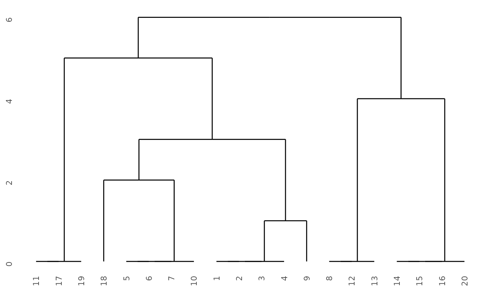

A native R implementation of TWINSPAN (Hill 1979) and modified TWINSPAN (Roleček et al. 2009). The algorithm divides stands (samples) hierarchically by the first axis of a correspondence analysis (reciprocal averaging) of pseudospecies, refines the division with differential species, and summarises it with a small set of indicator pseudospecies.
Usage
twinspan(
x,
cut_levels = c(0, 2, 5, 10, 20),
min_size = 5,
max_depth = 6,
max_indicators = 7,
diff_threshold = 1/3,
refine_iter = 5,
modified = FALSE,
n_clusters = NULL,
use_indicator = FALSE,
downweight = TRUE,
polish = c("hill", "ecan"),
species = TRUE
)
# S3 method for class 'twinspan'
as.hclust(x, ...)
# S3 method for class 'twinspan'
print(x, ...)Arguments
- x
A community data matrix or data.frame. rownames: stands, colnames: species.
- cut_levels
A numeric vector of pseudospecies cut levels.
- min_size
An integer. Groups smaller than this are not divided.
- max_depth
An integer of the maximum number of division levels. The default (6) is the same as the original TWINSPAN (its
levmax).- max_indicators
An integer of the maximum number of indicator pseudospecies used to summarise a division.
- diff_threshold
A numeric in (0, 1]. A pseudospecies is a differential species when the absolute value of its preference is not less than this. The default (1/3) corresponds to a 2:1 frequency ratio.
- refine_iter
An integer of the maximum number of refinement steps.
- modified
A logical. TRUE: modified TWINSPAN. The most heterogeneous group is divided first.
- n_clusters
An integer of the number of groups to stop at, or NULL for no limit.
- use_indicator
A logical. TRUE: use the indicator ordination for the final division (as in the original TWINSPAN). FALSE: use the refined ordination.
- downweight
A logical. TRUE (the default, as in the original TWINSPAN): downweight the rare pseudospecies in the ordination, in the way of
decorana(). Seetw_downweight().- polish
A string. "hill" (the default): divide in the way of the original TWINSPAN. "ecan": the earlier way of this package.
diff_threshold,refine_iteranduse_indicatorare used only by "ecan".- species
A logical. TRUE: classify pseudospecies as well as stands, which is needed for tw_two_way().
- ...
Ignored.
Value
twinspan() returns a list with class "twinspan".
$classification: a tibble of stand, group, path and depth.
$species_classification:
a tibble of species, group, path and depth
(of pseudospecies when polish = "ecan").
$nodes: a list of the nodes of the division tree.
$pseudospecies: the pseudospecies matrix.
$call, and the parameters above.
as.hclust() returns an "hclust" object so that cls_color(), cls_add_group() and ggdendro::ggdendrogram() can be used.
print() returns the object invisibly.
Details
The package is written in plain R and needs no compiler.
It is not a port of Hill's FORTRAN program, but polish = "hill"
(the default) follows the steps of that program:
the rare pseudospecies are downweighted as WEIGHT does, the axis is
polished twice as POLISH does, the stands are divided at the middle
of the range of the polished axis, and the stands of the critical zone
around that point are placed by the indicator pseudospecies, whose
number and threshold are the ones that misclassify fewest stands.
The constants of the original are in tw_hill_const().
The two halves of a division are put in the order of the original as well: the half that resembles the group next to the one being divided comes first, so that neighbouring groups stay together.
On the dune, sipoo, varespec, mite, BCI and pyrifos data
of vegan
this reproduces the original program exactly: the same groups with the
same numbers, the same divisions and the same eigenvalues.
It does so on twenty randomly generated data sets as well.
The species are classified in the way of the original as well, that is
on how faithful each of them is to the groups of stands rather than on
the pseudospecies table itself, and without indicators:
see tw_species_data().
The species groups are those of the original too.
polish = "ecan" keeps the earlier way of this package, which was
written from the published description alone: the division is refined
with the pseudospecies whose preference reaches diff_threshold, and
the stands are divided at the centroid of the axis.
It is kept because it needs no zone or indicator to place a stand,
but it does not follow the original as closely.
If the results of the original program are needed,
the twinspan package of Oksanen
(https://github.com/jarioksa/twinspan, MIT licensed)
calls Hill's FORTRAN code itself.
References
Hill, M.O. (1979) TWINSPAN: a FORTRAN program for arranging multivariate data in an ordered two-way table by classification of the individuals and attributes. Cornell University, Ithaca.
Roleček, J., Tichý, L., Zelený, D. and Chytrý, M. (2009) Modified TWINSPAN classification in which the hierarchy respects cluster heterogeneity. Journal of Vegetation Science 20: 596-602.
Examples
# \donttest{
data(dune, package = "vegan")
tw <- twinspan(dune)
tw
#> TWINSPAN
#> stands: 20
#> pseudospecies: 75
#> cut levels: 0 2 5 10 20
#> divisions: 6
#> groups: 7
#>
#> division 1 at level 0 (n = 20, eig = 0.511)
#> indicators: Ranuflam_1(+) Agrostol_1(+) Eleopalu_1(+) Lolipere_1(-)
#> division 2 at level 1 (n = 13, eig = 0.384)
#> indicators: Hyporadi_1(-)
#> division 3 at level 1 (n = 7, eig = 0.411)
#> indicators: Sagiproc_1(-)
#> division 4 at level 2 (n = 10, eig = 0.317)
#> indicators: Planlanc_1(-)
#> division 5 at level 3 (n = 5, eig = 0.284)
#> indicators: Achimill_1(+)
#> division 6 at level 3 (n = 5, eig = 0.301)
#> indicators: Juncarti_1(+)
tw$classification
#> # A tibble: 20 × 4
#> stand group path depth
#> <chr> <int> <chr> <int>
#> 1 11 1 00 2
#> 2 17 1 00 2
#> 3 19 1 00 2
#> 4 18 2 0100 4
#> 5 5 3 0101 4
#> 6 6 3 0101 4
#> 7 7 3 0101 4
#> 8 10 3 0101 4
#> 9 1 4 0110 4
#> 10 2 4 0110 4
#> 11 3 4 0110 4
#> 12 4 4 0110 4
#> 13 9 5 0111 4
#> 14 8 6 10 2
#> 15 12 6 10 2
#> 16 13 6 10 2
#> 17 14 7 11 2
#> 18 15 7 11 2
#> 19 16 7 11 2
#> 20 20 7 11 2
# modified TWINSPAN with a fixed number of groups
tw_mod <- twinspan(dune, modified = TRUE, n_clusters = 4)
table(tw_mod$classification$group)
#>
#> 1 2 3 4
#> 3 10 3 4
# use with the clustering helpers of ecan
library(ggdendro)
ggdendro::ggdendrogram(stats::as.hclust(tw))

# }